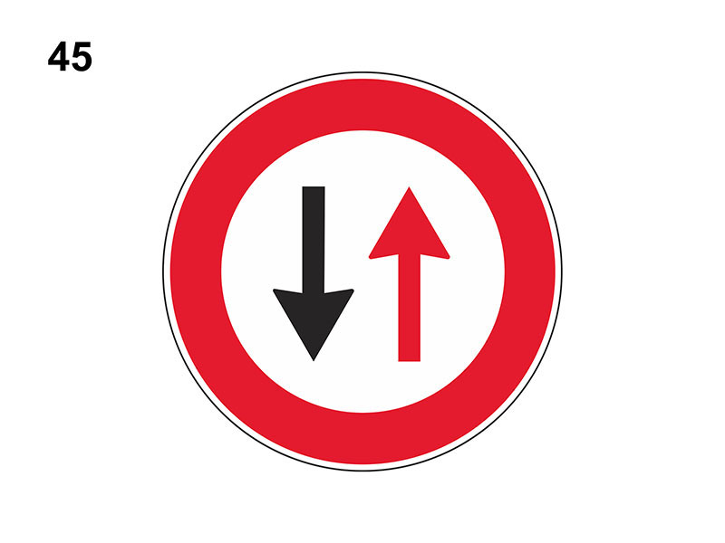

Dare la precedenza nei sensi unici alternati

E' un segnale di prescrizione (precedenza).
Impone, di dare precedenza ai veicoli provenienti dal senso opposto.
Si incontra quando in una strada a doppio senso vi sia una strettoia (ad esempio parte della carreggiata sia sbarrata per lavori) che permette il transito di una sola fila di veicoli.
Nella strettoia finisce temporaneamente il doppio senso di circolazione ed inizia il senso unico alternato, di fatto questo segnale impone di dare la precedenza nei sensi unici alternati.
Casi generali:
Non è vero che si incontra prima di un qualsiasi restringimento della carreggiata.
Impone, di dare precedenza ai veicoli provenienti dal senso opposto.
Si incontra quando in una strada a doppio senso vi sia una strettoia (ad esempio parte della carreggiata sia sbarrata per lavori) che permette il transito di una sola fila di veicoli.
Nella strettoia finisce temporaneamente il doppio senso di circolazione ed inizia il senso unico alternato, di fatto questo segnale impone di dare la precedenza nei sensi unici alternati.
Casi generali:
- se sono presenti segnale, semaforo e vigile: comanda il vigile
- bisogna dare la precedenza se il semaforo è spento oppure se è a luce lampeggiante gialla
- si ha la precedenza se il semaforo è a luce verede oppure se il semaforo è a luce rossa ma il vigile urbano ci invita a passare
Non è vero che si incontra prima di un qualsiasi restringimento della carreggiata.